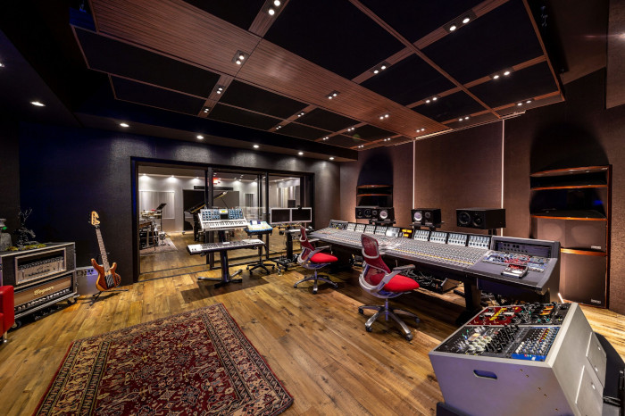

Man Cave.
Nothing, but vibes.
Studio Opens Soon
I am planning to open up one half of my recording studio towards December and January 2022. I picked up great skills and can be a useful ear in the studio becasue I understand both sides, the artist and the recording engineer. I am looking forward to this becasue music is my main priority right now and nothing excites me more than fully being in that environment. From meeting new people to hearing new sounds. Nothing, but vibes!
My Skills
Recording Artist
Audio Engineer
Mentor For New Recording Artist
Partners
Songs Engineered
Happy Clients
Songs I Wrote/Recorded
The Man Cave
- Pro Tools:
- Guaranteed Mix:
- Mastering Services:
- Auto-Tune Access:
- Focusrite Scarlett 2i2:
- Additions:
Pro Tools is kind of the music's world go to music software and one of the most simple, but useful DAWs. It can be used to make beats, record, and more.
From plugins from the compressor, to the equalizer, to auto-tune, you'll get an effective and professional sound. There is a simple option that I'll use for short sessions, which is apart of my Pro Tools template. For longer session the mix will be better because there is more plugins that I can dive into like the D-Esser and more.
Although I do this on my own time and rarely in the session, this is something I am still learning. I feel as I am a good point to provude this to future clients and since I am still learning, I'll start of with this service free to help me and the client.
This is the pitch shift that I use. For people who are interested, this is one of the cheapest but reliable auto-tunes from Antares. There are over thirty different notes to take your vocals and melodies to the next level. It fixes anytime your voice goes to pitching and put them notes right where they supposed to be to make your vocals sound full and melodic.
The Focusrite Scarlett 2i2 3rd Gen is the interface I use. It is very useful, it can connect to two mics, two pairs of headphones, and speakers. Everything on it is simple and very self explanatory.
Pop Filter, Microphone Stand, XLR Cables
My Price
- Basic
- 1 Hr - $20
- 2 Hrs - $40
- 3 Hrs - $50
- 4 Hrs - $65
- 5 Hrs - $80
Nothing, but vibes.
My goal is to make everything people friendly and to make sure everyone is comfortable and doing something besides making music. I been in recording studios before and it was only about music, though nothing is wrong with that because that is what you came for. An addition I am having are gaming systems and a basketball goal in thee back because I know it will make time go by for the people who come, but doesn't makes music. I once been in a 5-6 hour session with a group of my friends that make music and we had a great time because we had a balance of making music, gaming and a little bit of partying. That is my goal for every recording session of mines and I know that will draw people towards my studio. Nothing, but vibes.
About Me
I've been around music forever. Since I was around the age of 6-7 I knew that I always wanted to be apart of the process of making music. I used to sit in front of my computer and just watch music videos of artist like Kanye West and tried to remake some of my favorite artist songs. I joined my elementary school band and was all over the place becasue I wanted to do everything. I played melophone for 3 years and was apart of the drill team for two years until I went to high school. Once I gotten to high school, I started off with drill team again, but it didn't feel the same as it did in middle school, so I started to play cymbals and that carried on my eleventh grade year. Unfortanately, I couldn't do it my senior year because a medical condition, but that made me gravitate to the side of studio/recording music. I look at it as a blessing in disguise. Since I made that decision I've been progressing real good and found something that I love and I am excited for the future.
My Photos
My Work
Contact Me
New Orleans, LA
Phone: +1 504 595 9675
Email: derfleming19@gmail.com
Let's get in touch. Email or text me: